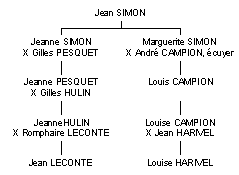
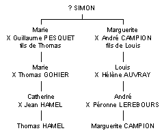
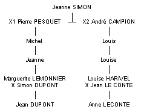
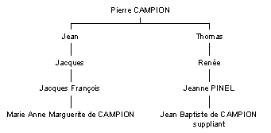

DISPENSES DE
CONSANGUINITÉ
DISPENSES DE
CONSANGUINITÉ
DISPENSES DE
CONSANGUINITÉ
DISPENSES DE
CONSANGUINITÉ
DISPENSE DE CONSANGUINITÉ DE JANVIER 1693
Provenance : Archives Départementales de Saint-Lô, Bernard LECONTE
Le 20-01-1693, dispense entre Jean LECONTE (22 ans) et Louise HARIVEL (23 ans)

Témoins :
1) Pierre OSMONT, 29 ans, laboureur à Saint Martin de
Bonfossé, parent au second degré de l'épouse
2) Thomas Le CHARPENTIER, 40 ans, laboureur du Mesnil Raoult,
frère en loy de l'époux
3) Jean LECANU, 32 ans, laboureur du Mesnil Raoult, frère en
loy de l'époux
4) Pierre BOULIGNY, 45 ans, laboureur à Saint Martin, beau
père de l'épouse
DISPENSE DE CONSANGUINITÉ D'AVRIL 1693
Provenance : Archives Départementales de Saint-Lô, Bernard LECONTE
Le 24-04-1693, dispense entre Thomas HAMEL (40 ans) et Marguerite CAMPION (21 ans)

Témoins :
1) Guillaume PESQUET, 82 ans, parent au 4ème degré des
parties, dit que Thomas PESQUET avait trois fils, l'aisné
Guillaume, le second Pierre, le troisième Jean ;
2) Alexandre PESQUET, 31 ans de St Romphaire, frère en loy de
l'époux ;
3) Jean Baptiste POUCHIN, Sieur de la Patinière, 50 ans, oncle
de l'épouse à cause de Gillette LEREBOURS sa femme
;
4) Maître Jean PESQUET, 55 ans, Sieur de la Pesquetière,
cousin des 2 parties
DISPENSE DE CONSANGUINITÉ DE MAI 1693
Provenance : Archives Départementales de Saint-Lô
Le 11-05-1693, dispense entre Alexandre VAUDEVIRE et Guillemette LEREBOURS
Témoins :
1) André
CAMPION (signe), écuyer,
sieur de la Loyère, de Saint Romphaire, 57 ans, oncle en loy
du VAUDEVIRE et cousin de Guillemette LEREBOURS ;
2) Romphaire LEMONNIER, sieur de l'Oblinière, de Saint
Romphaire, 68 ans, oncle d'Alexandre VAUDEVIRE.
DISPENSE DE CONSANGUINITÉ D'AVRIL 1710
Provenance : Archives Départementales de Saint-Lô, Bernard LECONTE
Le 24 avril 1710, dispense entre Jean DUPONT et Anne LE CONTE

DISPENSE DE CONSANGUINITÉ DE NOVEMBRE 1733
Référence : 6 Mi 244
Provenance : Archives Départementales de
Saint-Lô
Le 10-11-1733 : dispense entre
"Jean Baptiste de
Campion (signe) Ecuyer, sieur et
patron de Saint Romphaire et Marie Anne Margueritte de Campion (signe) de la parroisse de la
Meurdraquière"
"comme le suppliant quoyque de qualité ne jouit pas d'une
grosse fortune le bien du feu S[ieu]r son pere ne valant pas plus de
cinq ou six cens livres lequel est chargé de deux douaires Et
d'un partage pour une sœur et que lad[ite] d[emoise]lle de
Campion qu'il recherche n'a pour
dot qu'une somme de Cent Cinquante Livres etant fille de famille
Lesquels ne contractent Led[it] mariage que pour conserver le bien de
même nom"
[...]
"Jean baptiste de
Campion Escuier Seig[neu]r de la
fouquerie et patron de St Romphaire"
Témoins :
1) Noble homme Jean
de Campion (signe) prêtre
curé de St Romphaire, âgé d'environ 50 ans, oncle
paternel du suppliant déclare :

2) François de FRETEL (signe),
Escuier, seigneur et patron du Mesnil Rault et de blanville, environ
60 ans, oncle maternel du suppliant ;
3) Pierre du HAMEL (signe) vivant de son bien de la paroisse de
foligny, environ 40 ans, ni parent, domestique, allié des
requérants : "on a esperé de reunir les biens d'une
même famille pour la maintenir En Estat de remplir les devoirs
de la naissance du suppliant dont les ancetres se sont donnés
au service de sa majesté" ;
4) Pierre Le BOEÜF de St germain d'aille, vivant de son bien,
environ 22 ans, ni parent allié ou domestique des partyes.
Dans la lettre : Jean Baptiste de Campion, écuyer, seigneur de la fouquerie et
patron de Saint Romphaire, fils de feu André de
Campion et de Noble Dame Jeanne
Pinel, et Marie
Anne Marguerite de Campion, fille
de Jacques
François, écuyer,
sieur de la Garenterie, de la Houssée et de la
Meurdraquière et de Noble Dame Marie Marguerite Louise Le
Maye, de la paroisse de la Meurdraquière.
DISPENSE DE CONSANGUINITÉ D'OCTOBRE 1742
Référence : 6 Mi 246
Provenance : Archives Départementales de
Saint-Lô
Le 28 octobre 1742 : dispense entre "noble homme Jean Baptiste de Campion (signe) veuf de Marie anne de campion de la parroisse de St Romphaire du doienné de perci, et Demoiselle marie anne Dodeman (signe) de la parroisse de St Sever du doienné de Monbrai.
Et vous remontrent que depuis plus d'un an ils se sont fréquentés et recherchés en mariage sans avoir connoissance qu'ils fussent parents de quart en quart en degré de consanguinité et méme de quart en quart en degré d'affinité, ce deffaut de connoissance a fait qu'ils ont été mariés du troise octobre du présent mois ; mais qu'aiant appris de personnes éloignez qu'ila avoient deux empêchements à leur mariage, ils ont eu recours aussitôt à votre authorité à ce qu'il vous plaise, Monseigneur, les dispenses mésicordieusement desdits empêchements, attendu leur bonnefoy, et par ce moien les réunir ensemble, ils seront obligez de prier dieu pour la conservation de vôtre sacrée personne"
Les témoins sont :
1) "Noble homme Jean de Campion (signe) Curé de Saint Romphaire aagé de Soixante ans [...] Enquis s'il est parent ou allié Serviteur ou domestique des parties, a dit estre oncle paternel de noble homme Jean Baptiste de Campion, neammoins dira Verité. Depose que René et peronne de Campion etoient frere et soeür, que de René est sortie Renée de Campion, de Renée Jeanne pinelle et de Jeanne Jean Baptiste de Campion supliant ; et que de peronne de Campion est sortie Anne Lorence, d'Anne Sebastien dodeman Et de Sebastien Marie Anne dodeman ce qui prouve La parenté au quatriesme degré de Consanguinité ; Et pour l'affinité dépose que René et Jean de Campion étoient freres qu'ils avoient pour Soeür peronne de Campion duquel Jean est sortit Jacques, de Jacques est Sortit Jacques françois et dud Jacques françois Marie Anne de Campion que led Supliantavoit epousée en premiere nopce ; qu'il y a dix huit mois qu'ils Se sont Recherchés en mariage Sans qu'ils ensoit Connoissance, desd Empeschements ce qui a donné lieu au mariage Celebré à Saint Sever Le trois doctobre pnt mois [...]"
2) "Maistre Charles Bon françois Sebastien Dodeman (signe) ptre de la parroisse de Saint Sever agé de trente deux ans [...] a dit estre parent frere delad Marie Anne dodeman '[même déclaration]
3) "Noble homme Alexandre Adrian Gautier (signe) de La parroisse de troisgos agé de quarante cinq ans [...] a dit estre Cousin Remué de germain de Lad Supliante" [même déclaration]
4) "Noble homme Thomas de Malherbe (signe) de la parr de Sevans diocesse de bayeux agé de trente deux ans [...] a dit estre beau frere du supliant " [même déclaration]